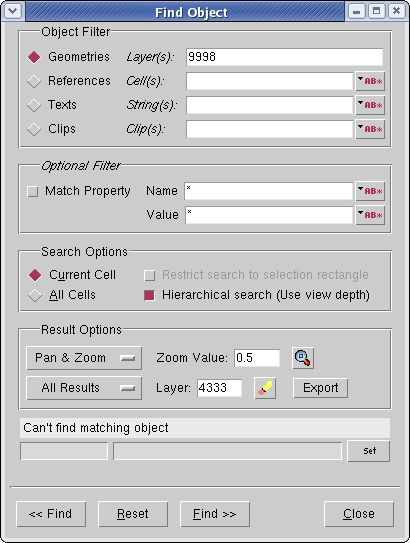

You can use the
CMi interface to browse for failed markers.
Prerequisites
Before starting this procedure,
you should have the following:
Procedure
- In the Layer Options section
of CMi, enter a layer number Failed Markers
Layer Number text field. Click Generate Output after this
value has been set.
- In the layout viewer (such
as Calibre WORKbench), select Object >
Find Object to invoke the Find Object dialog box (see Figure 1). Use the controls in the Find Object
dialog box to browse for markers.
Figure 1. Using the Find Object
Dialog Box
Alternatively, you can use
the object browser toolbar to browse the markers, as shown in Figure 1 (select Object > Show Find Toolbar to
show the toolbar).
Figure 2. Using Show Find Toolbar
Note: While
browsing, you may encounter small triangles are drawn by CMi at
the origin. These are required to maintain the layers when there
are no other shapes. In general, they can be ignored.